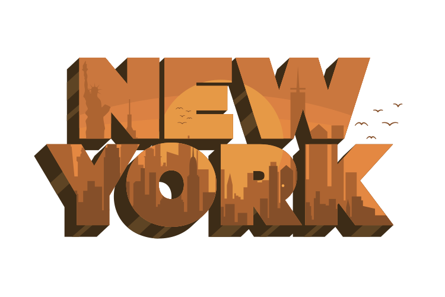

About Me:
During the height of the pandemic, I decided to take a leap of faith and begin the journey
of transitioning to a career in cyber security. After a period of time of studying and
developing my skills, I officially transitioned into a security role in the summer of 2021.
In the last few years I've had the opportunity to work with many tools and technologies.
Take a look below for additional details regarding those learned skills:
| Skill | Years of Experience | Skill Level |
| AWS | 3 | Intermediate |
| Bash | 2 | Intermediate |
| HTML | 1 | Beginner |
| CSS | 1 | Beginner |
| Javascript | 1 | Beginner |